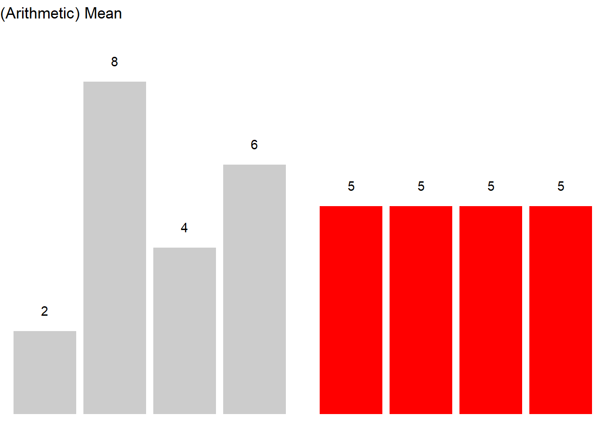
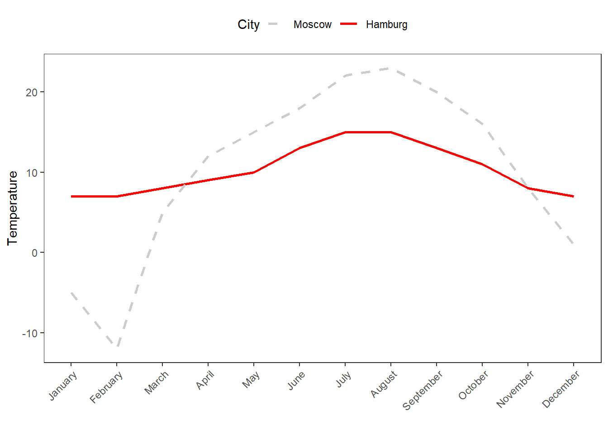

Descriptive Statistics with R
Martin Schweinberger

1 Introduction
This tutorial focuses on descriptive statistics which provide a way to summarize and interpret data without getting lost in the numbers. They help us understand the main features of a dataset, such as central tendency (mean, median), variability (standard deviation), and distribution. Descriptive statistics offer valuable insights for analyzing and interpreting quantitative data in humanities and linguistics research (see e.g. Bickel and Lehmann 2012; Thompson 2009).

This tutorial is aimed at beginners and intermediate users of R with the aim of showcasing how to summarize data using R. The aim is not to provide a fully-fledged analysis but rather to show and exemplify selected useful methods for describing and summarizing data.
To be able to follow this tutorial, we suggest you check out and
familiarize yourself with the content of the following tutorials:
- Introduction to Quantitative Reasoning
- Basic Concepts in Quantitative Research
- Getting started with R
- Loading, saving, and generating data in R
- Handling Tables in R
Click here1 to
download the entire R Notebook for this
tutorial.

Click
here
to open an interactive Jupyter notebook that allows you to execute,
change, and edit the code as well as to upload your own data.
To show why data summaries are useful, think of the following: you are teaching two different classes in the same school, in the same grade, and at the same level. Both classes take the same exam and, after correcting and grading the exams, someone asks you which class performed better. You could of course say something along the lines of Well, class A had 5 Bs, 10 Cs, 12 Ds, and 2 Fs while class B had 2 As, 8 Bs, 10 Ds, and 4 Fs but this answer is not really satisfying. Descriptive statistics enable you to summarize complex data sets in very few words and using only very basic, and easy to understand, concepts. And this is what we will be dealing with in the following.
Before delving deeper into what descriptive statistics is, it is useful to have a general idea of how it can be contextualized. Thus, on a more general note, we will be dealing only with one particular subbranch of statistics. Statistics in general can be defined as a branch of mathematics that deals with data collection, organization, analysis, interpretation, and presentation. As such, statistics can be subdivided into two main areas. Descriptive statistics deals with the description of data and their visualization, while inferential statistics deals with data analysis and interpretation. Typically, this means testing assumptions about correlations between variables (see for example here). As stated above, here, we will be dealing with the description of data, especially with measures of central tendency, measures of variability and confidence intervals.
Preparation and session set up
This tutorial is based on R. If you have not installed R or are new to it, you will find an introduction to and more information how to use R here. For this tutorials, we need to install certain packages from an R library so that the scripts shown below are executed without errors. Before turning to the code below, please install the packages by running the code below this paragraph. If you have already installed the packages mentioned below, then you can skip ahead and ignore this section. To install the necessary packages, simply run the following code - it may take some time (between 1 and 5 minutes to install all of the libraries so you do not need to worry if it takes some time).
# install packages
install.packages("dplyr")
install.packages("ggplot2")
install.packages("stringr")
install.packages("boot")
install.packages("DescTools")
install.packages("ggpubr")
install.packages("flextable")
install.packages("psych")
install.packages("Rmisc")
# install klippy for copy-to-clipboard button in code chunks
install.packages("remotes")
remotes::install_github("rlesur/klippy")Now that we have installed the packages, we activate them as shown below.
# set options
options(stringsAsFactors = F) # no automatic data transformation
options("scipen" = 100, "digits" = 12) # suppress math annotation
# activate packages
library(boot)
library(DescTools)
library(dplyr)
library(stringr)
library(ggplot2)
library(flextable)
library(ggpubr)
library(psych)
library(Rmisc)
# activate klippy for copy-to-clipboard button
klippy::klippy()Once you have installed R and RStudio and initiated the session by executing the code shown above, you are good to go.
2 Measures of Centrality
In linguistics three measures of centrality or measures of central tendency are of particular relevance: the mean, the median and the mode (Gaddis and Gaddis 1990). In addition, there are two more measures of central tendency, the geometric and the harmonic mean which we will only briefly discuss as they are not that relevant for language research. What measure is appropriate depends on the type of variable scaling, the distribution of the data, and what is the intended aim of the data summary.
Means | Use |
|---|---|
(Arithmetic) mean (average) | Description of normally distributed numeric variables (most common measure of central tendency) |
Median (middle value) | Description of non-normal numeric variables or ordinal variables (skewed data or influential outliers) |
Mode (most frequent value) | Description of nominal and categorical variables |
Geometric mean (average factor) | Description of dynamic processes such as growth rates |
Harmonic mean (average rate) | Description of dynamic processes such as velocities |
In the following we will go over these types of measures of central tendencies, exemplify their use, describe their strengths and weaknesses, and show how to calculate them in R.
Mean
The mean is used when the data is numeric and normally distributed. The mean is calculated by applying the formula shown below.
\[\begin{equation} \bar{x}=\frac{1}{n} \sum_{i=1}^n x_i = \frac{x_{1}+x_{2}+ \dots + x_{n}}{n} \end{equation}\]
To calculate the mean, sum up all values and divide by the number of values. See the example below for clarification.

Consider, we are interested in the mean length of sentences in a short text, then the first thing we could do would be to list the sentences and their length in a table.
Sentences | Words |
|---|---|
Call me Ishmael | 3 |
Some years ago -- never mind how long precisely -- having little or no money in my purse, and nothing particular to interest me on shore, I thought I would sail about a little and see the watery part of the world. | 40 |
It is a way I have of driving off the spleen, and regulating the circulation. | 15 |
Whenever I find myself growing grim about the mouth; whenever it is a damp, drizzly November in my soul; whenever I find myself involuntarily pausing before coffin warehouses, and bringing up the rear of every funeral I meet; and especially whenever my hypos get such an upper hand of me, that it requires a strong moral principle to prevent me from deliberately stepping into the street, and methodically knocking people's hats off--then, I account it high time to get to sea as soon as I can. | 87 |
To calculate the mean, we need to divide the sum of the number of words per sentence (145) by the number of sentences (7) (see the equation below).
\[\begin{equation} \frac{3+40+15+87}{4} = \frac{145}{4} = 36.25 \label{eq:mittel2} \end{equation}\]
The mean sentences length in our example is 36.25 words
In R, the mean is calculated as follows.
# create numeric vector
frequencies <- c(3, 40, 15, 87)
# calculate mean
mean(frequencies)## [1] 36.25The mean is the most common way to summarize numeric variables and it is very easy and intuitive to understand. A disadvantage of the mean is that it is very strongly affected by outliers which is why the median is the preferable measure of centrality when dealing with data that is not normal or that contains outliers.
EXERCISE TIME!
`
- Calculate the arithmetic mean: 1, 2, 3, 4, 5, 6
Answer
(1 + 2 + 3 + 4 + 5 + 6)/6 ## [1] 3.5- Calculate the arithmetic mean for the following values using the
meanfunction: 4, 3, 6, 2, 1, 5, 6, 8
Answer
mean(c(4, 3, 6, 2, 1, 5, 6, 8)) ## [1] 4.375- Create a vector out of the following values and calculate the
arithmetic mean using the
meanfunction: 1, 5, 5, 9
Answer
vec <- c(1, 5, 5, 9)
mean(vec) ## [1] 5`
Median
The median can be used for both numeric and ordinal variables. In contract to the mean, it is more robust and not as easily affected by outliers. While the mean is commonly associated with numeric data that is normally distributed, the median is typically used when dealing with non-normal numeric or ordinal variables, i.e. variables that are ordered but not truly numeric. The median is the central value in a de- or increasing ordering of values in a vector. In other words, 50 percent of values are above and 50 percent of values are below the median in a given vector.
If the vector contains an even number of elements, then the two central values are summed up and divided by 2. If the vector contains an uneven number of elements, the median represents the central value.
\[\begin{equation} median_{x}= \begin{cases} x_{\frac{n+1}{2}} & n\text{ uneven} \\ \frac{1}{2}\bigl(x_{\frac{n}{2}}+x_{\frac{n+1}{2}}\bigr) & n\text{ even} \end{cases} \label{eq:median} \end{equation}\]

Let’s have a look at an example. Consider you are interested in the age stratification of speakers in the private dialogue section of the Irish component of the International Corpus of English (ICE). When tabulating and plotting the age variable you get the following table and graph.
Age | Counts |
|---|---|
0-18 | 9 |
19-25 | 160 |
26-33 | 70 |
34-41 | 15 |
42-49 | 9 |
50+ | 57 |

The age groups represent an order factor which means that there are categories with a natural order (here from old to young or vice versa). If we order speakers according to their age from young to old, we get a vector of length 320. If we then take the central value, i.e. the value of the 160th speaker, we get the median age in the private dialogue section of the Irish component of the International Corpus of English (ICE).
In R, the median is calculated as shown below.
# create a vector consisting out of ranks
ranks <- c(rep(1, 9), rep(2, 160), rep(3, 70), rep(4, 15), rep(5, 9), rep(6, 57))
# calculate median
median(ranks)## [1] 2In our case, the median age is 19-25 because the 160th speaker belongs to the 2nd age group, i.e. the age group with speakers between 19 and 25 years old.
EXERCISE TIME!
`
- Calculate the median: 1, 2, 3, 4, 5, 6
Answer
(3 + 4)/2 ## [1] 3.5- Calculate the median for the following values using the
medianfunction: 4, 3, 6, 2, 1, 5, 6, 8
Answer
median(c(4, 3, 6, 2, 1, 5, 6, 8)) ## [1] 4.5- Create a vector out of the following values and calculate the median
using the
medianfunction: 1, 5, 5, 9
Answer
vec <- c(1, 5, 5, 9)
median(vec) ## [1] 5`
Mode
The mode is typically used when dealing with categorical variables and it reports which level of a factor or a categorical variable is the most frequent.

Here is an example to illustrate the mode. Consider you are interested where most speakers in the private dialogue section of the Irish component of the International Corpus of English are currently residing and you get the following distribution.
CurrentResidence | Speakers |
|---|---|
Belfast | 98 |
Down | 20 |
Dublin (city) | 110 |
Limerick | 13 |
Tipperary | 19 |

The tabulated and visualized data show that the mode is Dublin (City), because the largest group (110 speakers) of speakers in the corpus are speakers from the city of Dublin. This means that the average speaker in in the private dialogue section of the Irish component of the International Corpus of English (ICE) is from Dublin city.
In R the mode is calculated as shown below:
# create a factor with the current residence of speakers
CurrentResidence <- c(rep("Belfast", 98), # repeat "Belfast" 98 times
rep("Down", 20), # repeat "Down" 20 times
rep("Dublin (city)", 110), # repeat "Dublin (city)" 110 times
rep("Limerick", 13), # repeat "Limerick" 13 times
rep("Tipperary", 19)) # repeat "Tipperary" 19 times
# calculate mode
names(which.max(table(CurrentResidence))) # extract which level occurs most frequently## [1] "Dublin (city)"A word of warning is in order here as only the first(!) maximal value is provided by R even if several categories have the same frequency.
Geometric mean
The geometric mean represents a measure of central tendency that is used when dealing with dynamic processes where the later elements are dependent on the previous elements. The geometric mean is calculated according to the equation below.
\[\begin{equation} \bar{x}_{geometric} = \sqrt[n]{x_1 \times x_{i+1} \times \dots \times x_n} \end{equation}\]
Imagine you have the option to buy two different stock packages and you have to buy one of them. Which one would you buy?
Year | Package1 | Package2 |
|---|---|---|
Year 1 | +5% | +20% |
Year 2 | -5% | -20% |
Year 3 | +5% | +20% |
Year 4 | -5% | -20% |
Is one package better than the other? Did one package perform better than the other?
- Package 1:
- Return: \(1.05 \times .95 \times 1.05 \times .95 = .995\) (0.5% loss)
- Year-over-year average: \(.995^{1/4}\) = ~0.125% loss per year
- Package 2:
- Return: \(1.2 \times .8 \times 1.2 \times .8 = 0.9216\) (7.84% loss)
- Year-over-year average: \(.9216^{1/4}\) = ~2% loss per year.
Package 2 performs substantially worse because here, the changes in growth depend on the previous growth rates.
Harmonic mean
The harmonic mean is a measure of central tendency that provides us with the average rate and is used when dealing with dynamic processes that involve velocities and distances. The harmonic mean is calculated according to the equation below.
\[\begin{equation} \bar{x}_{harmonic} = \frac{n}{\frac{1}{x_i} + \frac{1}{x_{i+1}} + \frac{1}{x_{i+\dots}} + \frac{1}{x_n}} \end{equation}\]
The harmonic mean is used when two rates contribute to the same workload (for instance when we download a file). Each installment is in a relay race and contributes the same amount to the issue. For example, we make a round trip to work and back. The way to work is 60 kilometers. On the way to work, we can only travel at 30 kph while we can go 60 kph on the way back. The distance is the same. Half of the results (distance traveled) comes from the first rate (30 kilometers per hour) and the other half from the second rate (60 kilometers per hour). The result is that is takes us 3 hours to get to work and back.
\[\begin{equation} \bar{x}_{harmonic} = \frac{2}{\frac{1}{30} + \frac{1}{60}} = \frac{2}{\frac{2}{60} + \frac{1}{60}} = \frac{2}{\frac{3}{60}} = \frac{2}{1} \times \frac{60}{3} = \frac{120}{3} = 40 \end{equation}\]
The reason why using the arithmetic mean is inappropriate in such cases is the following: The idea behind the arithmetic mean is that we calculate a single value that can replace all values in a given distribution and the sum of the mean values is identical to the sum of the observed values. So, the average is a single element that replaces each element. In our example, we have to drive at 40 kilometers per hour (instead of 30) to work and 40 kilometers per hour (instead of 60) to get back from work in the same amount of time. If we went with 45 kilometers per hour, then the result would not be 3 hours but 2 hours and 40 minutes so that the result would not be the same.
Notes on Measures of Centrality
As suggested above, the mean is strongly affected by outliers (which is why in sch cases, the median is the more appropriate measure fo central tendency). To illustrate this, imagine you are interested whether the use of discourse particles differs across two corpora. The two corpora represent the speech of the same five speakers but in different situations and the speech thus represents different registers. In a first step, you calculate the relative frequency of discourse particle use and both corpora have a mean of 13.4 particles per 1,000 words. Given the mean, the two corpora do not seem to differ. However, when tabulating and plotting the use of particles by speaker and across these two corpora, it becomes immediately clear that the mean is not the appropriate measure of central tendency as the distributions are very dissimilar.
Corpus | Speaker | Frequency |
|---|---|---|
C1 | A | 11.4 |
C1 | B | 5.2 |
C1 | C | 27.1 |
C1 | D | 9.6 |
C1 | E | 13.7 |
C2 | A | 0.2 |
C2 | B | 0.0 |
C2 | C | 1.1 |
C2 | D | 65.3 |
C2 | E | 0.4 |
The Figure above shows that the use of discourse particles is distributed rather evenly across speakers in Corpus 1 while the distribution is very uneven in corpus 2. In corpus 2, 4 out of 5 speakers use almost no discourse particles and only one speaker, speaker D, makes excessive use of discourse particles in corpus 2. The high usage frequency of discourse particles by speaker D in corpus 2 causes the mean of corpus 2 to be identical to the mean reported for corpus 1 although the distribution of usage rates differs drastically. This means that reporting the median in addition to the mean can be useful if the distribution of values is very uneven (or non-normal or skewed).
To exemplify, we will summarize the distribution of discourse particles in the two corpora: the use of discourse particles in corpus 1 (mean = 13.4, median = 11.4) is substantially different from the use of discourse particles in corpus 2 (mean = 13.4, median = 0.4).
3 Measures of Variability
Measures of variability provide information about the distribution of values such as whether the data are distributed evenly and do not differ substantially or whether the data are rather heterogeneous and are distributed very unevenly (Thompson 2009). In the following, we will have a look at the range, the interquartile range (IQR), the variance, and the standard deviation.
As before, we will use a practical example to see the usefulness of applying measures of variability. Imagine you dealing with two cities, let’s say Moscow and Hamburg, that have the same mean temperature per year. However, the variability of temperatures varies differs dramatically between the Moscow and Hamburg.
Month | Moscow | Hamburg |
|---|---|---|
January | -5.00 | 7.00 |
February | -12.00 | 7.00 |
March | 5.00 | 8.00 |
April | 12.00 | 9.00 |
May | 15.00 | 10.00 |
June | 18.00 | 13.00 |
July | 22.00 | 15.00 |
August | 23.00 | 15.00 |
September | 20.00 | 13.00 |
October | 16.00 | 11.00 |
November | 8.00 | 8.00 |
December | 1.00 | 7.00 |
Mean | 10.25 | 10.25 |

In the following, we will discuss and calculate different measures of variability for the two cities.
Range
The range is the simplest measure of variability and reports the lowest and highest value of a distribution. That is, the range provides minimum and maximum of a vector to show the span of values within a distribution.
In R, the range is extracted as shown below.
# create a numeric vector
Moscow <- c(-5, -12, 5, 12, 15, 18, 22, 23, 20, 16, 8, 1)
min(Moscow); max(Moscow) # extract range## [1] -12## [1] 23The lowest temperature value for Moscow is -12 degrees Celsius and the highest value is 23 degrees Celsius. The range thus spans from -12 to 23.
Interquartile range (IQR)
The interquartile range (IQR) denotes the range that encompasses the central 50 percent of data points and thus informs about how values are distributed. This means that the IQR spans from the first quartile that encompasses 25 percent of the data to the third quartile that encompasses 75 percent of the data.
The easiest way to extract the IQR in R is to apply the
summary function to a vector as shown below and then
subtract the value of the 1st quartile from the value of the
3rd quartile.
summary(Moscow) # extract IQR## Min. 1st Qu. Median Mean 3rd Qu. Max.
## -12.00 4.00 13.50 10.25 18.50 23.00The summary function reports that the minimum
temperature is -12 degrees Celsius and that the maximum temperature is
23 degrees Celsius. Also, the lower 25 percent of the data fall within
-12 and 4 degrees Celsius (from the minimum value to the 1st
quartile) and the upper 25 percent fall within 18.5 and 23 degrees
Celsius (from the 3rd quartile to the maximum value). The IQR
range represents a range that encompasses the central 50% of the data
and thus represents the value that can be calculated by subtracting the
value of the 1st from the value of the 3rd
quartile..
Thus, the IQR is 18.5 - 4 = 14.5
.
Variance
The variance is a measure of the spread of a set of data around its mean. It is a key concept in statistics and is used to quantify the dispersion of a set of observations. The variance is defined as the average of the squared differences between each observation and the mean of the data set.
The variance is calculated according to the formula below. To calculate the variance, each value is subtracted from the mean and the result is squared. The squared values are then added and the resulting sum is divided by the number of values minus 1.
\(s = \sigma^2 = \frac{1}{n-1} \sum_{i=1}^{n} (x_i - \bar{x})^{2}\)
For our example, the variance of temperatures for Moscow is 123.6591 and 9.477273 for Hamburg.
In R, the variance is calculated as shown below.
sd(Moscow)^2## [1] 123.659090909Standard deviation
The standard deviation (abbreviated with capital \(sigma\) \(\sigma\)) is calculated according to first equation shown below or, alternatively, according to second equation shown below and it is the square root of the squared variance.
\(\sigma = \sqrt{s} = \sqrt{\frac{1}{n-1} \sum_{i=1}^{n} (x_i - \bar{x})^2}\)
\(\sigma = \sqrt{\frac{ \sum_{i=1}^{n} (x_i - \bar{x})^2}{n-1}}\)
For our example, the first equation shown above provides a standard deviation of 11.12 for Moscow and a standard deviation of 3.08 for Hamburg.
In R, the standard deviation is calculated as shown below.
# calculate standard deviation
sd(Moscow) ## [1] 11.1202109202The standard deviation of temperature values of Moscow is 11.12.
EXERCISE TIME!
`
- Calculate the mean, median, and mode as well as the standard
deviation for the following two vectors
A: 1, 3, 6, 2, 1, 1, 6, 8, 4, 2, 3, 5, 0, 0, 2, 1, 2, 1, 0
B: 3, 2, 5, 1, 1, 4, 0, 0, 2, 3, 0, 3, 0, 5, 4, 5, 3, 3, 4
Answer
A <- c(1, 3, 6, 2, 1, 1, 6, 8, 4, 2, 3, 5, 0, 0, 2, 1, 2, 1, 0)
B <- c(3, 2, 5, 1, 1, 4, 0, 0, 2, 3, 0, 3, 0, 5, 4, 5, 3, 3, 4)
mean(A)
median(A)
max(A)
sd(A)
mean(B)
median(B)
max(B)
sd(B)- Find a partner and discuss which measure of central tendency is appropriate when dealing with grades. Then, find another partner and see whether they have come to the same conclusion or discuss why if not. Finally, discuss the advantages and disadvantages of calculating the mean when dealing with grades.
Answer
The problem is that - strictly speaking - grades are ordinal and not numeric (i.e., interval- or ratio-scaled). This means that calculating the arithmetic mean is somewhat controversial. To resolve this issue, it is recommendable to either calculate the median (rather than the mean) or to be transparent about this issue and inform readers that the mean was used despite dealing with an ordinal variable.- Where are mean, median, and mode when dealing with normal data (i.e., when the data approximate a normal distribution)?
Answer
When dealing with normally distributed data, the arithmetic mean, median, and mode would ideally be identical (which is extremely rare when working with empirical data) or, at least, very similar.- Go and find a partner and discuss what it means - on a conceptual level rather than on a statistical/mathematical level - that two groups have different ranges for a certain feature (be careful, this is not as trivial as it may seem!).
`
Standard Error
The standard error is a measure of variability and it reports the average distance from some parameters (most often from the mean). It is calculated as the standard deviation of the residuals of the parameter in question. To exemplify the standard error, we will have a look at reaction times which show how fast participants realized that a sequence of letters were either existing words or just a sequence of letters.
RT | State | Gender |
|---|---|---|
429.276 | Sober | Male |
435.473 | Sober | Male |
394.535 | Sober | Male |
377.325 | Sober | Male |
430.294 | Sober | Male |
289.102 | Sober | Female |
411.505 | Sober | Female |
366.191 | Sober | Female |
365.792 | Sober | Female |
334.034 | Sober | Female |
444.188 | Drunk | Male |
540.866 | Drunk | Male |
468.531 | Drunk | Male |
476.011 | Drunk | Male |
412.473 | Drunk | Male |
520.845 | Drunk | Female |
435.682 | Drunk | Female |
463.421 | Drunk | Female |
536.036 | Drunk | Female |
494.936 | Drunk | Female |
The standard error of the mean is calculated using the equation below.
\[\begin{equation} \sigma~{\bar{x}}~ =\frac{\sigma}{\sqrt{n}} \end{equation}\]
The standard error can be calculated manually (see below) by implementing the equation from above.
sd(rts$RT, na.rm=TRUE) /
sqrt(length(rts$RT[!is.na(rts$RT)])) ## [1] 14.7692485022An easier way to extract standard errors is to use the
describe function from the psych package (see
below)
# describe data
psych::describe(rts$RT, type=2)## vars n mean sd median trimmed mad min max range skew kurtosis
## X1 1 20 431.33 66.05 432.88 432.9 60.4 289.1 540.87 251.76 -0.2 -0.13
## se
## X1 14.774 Confidence Intervals
Confidence intervals are a range of values that are likely to contain the true value of a population parameter with a certain degree of confidence. Confidence intervals are important because they provide a way to quantify the uncertainty associated with an estimate of a population parameter. They allow us to determine how precise our estimate is and to communicate this uncertainty to others.
For example, if you are conducting a survey to estimate the average income of a population, you may find that the average income is 50,000 AUD with a 95% confidence interval of 49,000 AUD to 51,000 AUD. This means that if you repeated the survey many times, 95% of the intervals you would obtain would contain the true population average income.
Confidence intervals are a key tool in statistical inference and play an important role in fields such as epidemiology, economics, and political science, where they are used to make decisions based on uncertain information.
Confidence intervals can be calculated using the equation below.
\[\begin{equation} \bar{x} \mp z \frac{s}{\sqrt{n}} \end{equation}\]
The z-value for 95% probability (a two-tailed) of a normal
distribution is 1.96. To check this, we can use the qnorm
function and extract the z-value for a probability of .975 - we do not
use .95 because we want 2.5% of the lower tail (-1.96) and 2.5% of the
higher tail (1.96).
qnorm(0.975) ## [1] 1.95996398454This means that for a 95% confidence interval for normally distributed data, we can use the formula shown below.
\[\begin{equation} \bar{x} \mp 1.96 \frac{s}{\sqrt{n}} \end{equation}\]
If we have a vector of values (e.g., 4,5,2,3,1,4,3,6,3,2,4,1), we can easily calculate the confidence intervals for the mean as follows.
# calculate mean
m <- mean(c(4,5,2,3,1,4,3,6,3,2,4,1))
# calculate standard deviation
s <- sd(c(4,5,2,3,1,4,3,6,3,2,4,1))
# calculate n
n <- length(c(4,5,2,3,1,4,3,6,3,2,4,1))
# calculate lower and upper ci
lower <- m-1.96*(s/sqrt(n))
upper <- m+1.96*(s/sqrt(n))
# show lower ci, mean, and upper ci
lower; m; upper## [1] 2.30238790505## [1] 3.16666666667## [1] 4.03094542828There are several functions in R to extract confidence intervals. To show how you can do this for different types of elements, we will continue to work with the reaction times data.
EXERCISE TIME!
`
- Calculate the mean and confidence interval: 1, 2, 3, 4, 5, 6, 7, 8,
9
Answer
# calculate mean
m <- mean(c(1, 2, 3, 4, 5, 6, 7, 8, 9))
# calculate standard deviation
s <- sd(c(1, 2, 3, 4, 5, 6, 7, 8, 9))
# calculate n
n <- length(c(1, 2, 3, 4, 5, 6, 7, 8, 9))
# calculate lower and upper ci
lower <- m-1.96*(s/sqrt(n))
upper <- m+1.96*(s/sqrt(n))
# show lower ci, mean, and upper ci
lower; m; upper ## [1] 3.21077297882 ## [1] 5 ## [1] 6.78922702118- Calculate the mean and confidence interval: 3, 4, 5, 4, 3, 4, 5, 4,
3
Answer
# calculate mean
m <- mean(c(3, 4, 5, 4, 3, 4, 5, 4, 3))
# calculate standard deviation
s <- sd(c(3, 4, 5, 4, 3, 4, 5, 4, 3))
# calculate n
n <- length(c(3, 4, 5, 4, 3, 4, 5, 4, 3))
# calculate lower and upper ci
lower <- m-1.96*(s/sqrt(n))
upper <- m+1.96*(s/sqrt(n))
# show lower ci, mean, and upper ci
lower; m; upper ## [1] 3.37815472837 ## [1] 3.88888888889 ## [1] 4.3996230494`
Confidence Intervals for Simple Vectors
Confidence intervals (CIs) give a range that’s likely to include a population value with a certain degree of confidence. As such, CIs tell us how likely it is to get a value within a certain range if we drew another sample from the same population.
One easy method for extracting confidence intervals is to apply the
CI function from the Rmisc package.
# extract mean and confidence intervals
Rmisc::CI(rts$RT, ci=0.95) ## upper mean lower
## 462.238192381 431.325800000 400.413407619The ´CI´ function provides the mean reaction time (431.3258) and the 95 percent confidence band. With 95 percent confidence, the mean reaction time will have a mean between 400.41 and 462.24 milliseconds (ms).
Another way to extract the mean and its confidence intervals is by
using t.test function.
# extract mean and confidence intervals
stats::t.test(rts$RT, conf.level=0.95) ##
## One Sample t-test
##
## data: rts$RT
## t = 29.20431598, df = 19, p-value < 0.0000000000000002220446
## alternative hypothesis: true mean is not equal to 0
## 95 percent confidence interval:
## 400.413407619 462.238192381
## sample estimates:
## mean of x
## 431.3258Another alternative to extract the man ans the confidence interval
from a range of values is to use the MeanCI function from
the DescTools package.
# extract mean and confidence intervals
DescTools::MeanCI(rts$RT, conf.level=0.95) ## mean lwr.ci upr.ci
## 431.325800000 400.413407619 462.238192381This method is particularly interesting because it uses bootstrapping or resampling the data. As such, it is an empirical method to extract the mean and the confidence intervals. The values will differ given how many samples are drawn and we can get very precise estimates using this method.
# extract mean CIs
DescTools::MeanCI(rts$RT, method="boot", type="norm", R=1000)## mean lwr.ci upr.ci
## 431.325800000 402.065920019 459.599597681Because this is a data-driven approach, the results will vary, depending on the characteristics of the resampled data. To illustrate, compare the values provided above to the values generated below.
# extract mean CIs
DescTools::MeanCI(rts$RT, method="boot", type="norm", R=1000)## mean lwr.ci upr.ci
## 431.325800000 403.272504877 458.846973023Another method for extracting the mean and the confidence intervals
from a range of values using bootstrapping is to use the
boot function from the boot package.
# function to extract values
BootFunction = function(x, index) {
return(c(mean(x[index]),
var(x[index]) / length(index)))
}
# apply function to data
Bootstrapped = boot(data=rts$RT,
statistic=BootFunction,
R=1000)
# extract values
mean(Bootstrapped$t[,1]) ## [1] 431.4550746# alternative to extract values
boot.ci(Bootstrapped, conf=0.95) ## BOOTSTRAP CONFIDENCE INTERVAL CALCULATIONS
## Based on 1000 bootstrap replicates
##
## CALL :
## boot.ci(boot.out = Bootstrapped, conf = 0.95)
##
## Intervals :
## Level Normal Basic Studentized
## 95% (402.9, 459.5 ) (402.8, 460.4 ) (397.6, 463.3 )
##
## Level Percentile BCa
## 95% (402.2, 459.9 ) (400.1, 457.6 )
## Calculations and Intervals on Original ScaleThe advantage of using bootstrapping methods lies in the fact that the data is (frequently) not distributed normally which is not an issue for the bootstrapping and it will thus provide more reliable results as it does not rely on distributional assumptions about the data.
Confidence Intervals for Grouped Data
To extract the confidence intervals for grouped data, we can sue the
summarySE function from the Rmisc package.
# apply summarySE function to data
Rmisc::summarySE(data=rts,
# define variable representing frequencies
measurevar="RT",
# define grouping variable
groupvars="Gender",
# extract standard deviation, standard error, and confidence intervals
conf.interval = 0.95) ## Gender N RT sd se ci
## 1 Female 10 421.7544 82.8522922089 26.2001952746 59.2689594071
## 2 Male 10 440.8972 46.2804393809 14.6351599557 33.1070319225Confidence Intervals for Nominal Data
We now turn to confidence intervals for nominal data (see also Thomas and Grunkemeier 1975). When
dealing with nominal data, confidence intervals can be determined with
the binom.test function in the in-built stats
package. Alternative methods are available via the BinomCI
and MultinomCI functions from the DescTools
package. More advanced techniques for confidence intervals on nominal
data are available via the PropCIs package.
stats::binom.test(2, 20, 0.5, # binom.test(x, n, p = 0.5, ...)
alternative="two.sided", # define sidedness
conf.level=0.95) # define confidence level##
## Exact binomial test
##
## data: 2 and 20
## number of successes = 2, number of trials = 20, p-value =
## 0.000402450562
## alternative hypothesis: true probability of success is not equal to 0.5
## 95 percent confidence interval:
## 0.0123485271703 0.3169827140191
## sample estimates:
## probability of success
## 0.1Another way to use the BinomCI function is shown
below.
# extract CIs
BinomCI(2, 20, # apply BinomCI function
conf.level = 0.95, # define ci
method = "modified wilson") # define method for ci extraction## est lwr.ci upr.ci
## [1,] 0.1 0.0177680755349 0.301033645228Confidence Intervals for Multinomial Data
We use the MultinomCI function to extract the confidence
intervals form multinominal data.
observed = c(35,74,22,69) # define multinominal vector
MultinomCI(observed, # apply MultinomCI function
conf.level=0.95, # define ci
method="goodman") # define method for ci extraction## est lwr.ci upr.ci
## [1,] 0.175 0.1180188110631 0.251643112255
## [2,] 0.370 0.2898697185019 0.457995050825
## [3,] 0.110 0.0661144727952 0.177479835187
## [4,] 0.345 0.2668784298282 0.432498795139Citation & Session Info
Schweinberger, Martin. 2023. Descriptive Statistics with R. Brisbane: The University of Queensland. url: https://slcladal.github.io/dstats.html (Version 2023.05.04).
@manual{schweinberger2023desc,
author = {Schweinberger, Martin},
title = {Descriptive Statistics with R},
note = {https://slcladal.github.io/dstats.html},
year = {2023},
organization = "The University of Queensland, Australia. School of Languages and Cultures},
address = {Brisbane},
edition = {2023.05.04}
}sessionInfo()## R version 4.2.2 (2022-10-31 ucrt)
## Platform: x86_64-w64-mingw32/x64 (64-bit)
## Running under: Windows 10 x64 (build 22621)
##
## Matrix products: default
##
## locale:
## [1] LC_COLLATE=English_Australia.utf8 LC_CTYPE=English_Australia.utf8
## [3] LC_MONETARY=English_Australia.utf8 LC_NUMERIC=C
## [5] LC_TIME=English_Australia.utf8
##
## attached base packages:
## [1] stats graphics grDevices utils datasets methods base
##
## other attached packages:
## [1] Rmisc_1.5.1 plyr_1.8.8 lattice_0.21-8 psych_2.3.6
## [5] ggpubr_0.6.0 flextable_0.9.1 ggplot2_3.4.2 stringr_1.5.0
## [9] dplyr_1.1.2 DescTools_0.99.49 boot_1.3-28.1
##
## loaded via a namespace (and not attached):
## [1] nlme_3.1-162 fontquiver_0.2.1 httr_1.4.6
## [4] backports_1.4.1 tools_4.2.2 bslib_0.4.2
## [7] utf8_1.2.3 R6_2.5.1 colorspace_2.1-0
## [10] withr_2.5.0 mnormt_2.1.1 tidyselect_1.2.0
## [13] Exact_3.2 curl_5.0.0 compiler_4.2.2
## [16] textshaping_0.3.6 cli_3.6.1 expm_0.999-7
## [19] xml2_1.3.4 officer_0.6.2 fontBitstreamVera_0.1.1
## [22] labeling_0.4.2 sass_0.4.6 scales_1.2.1
## [25] mvtnorm_1.1-3 proxy_0.4-27 askpass_1.1
## [28] systemfonts_1.0.4 digest_0.6.31 rmarkdown_2.21
## [31] gfonts_0.2.0 pkgconfig_2.0.3 htmltools_0.5.5
## [34] fastmap_1.1.1 highr_0.10 rlang_1.1.1
## [37] readxl_1.4.2 rstudioapi_0.14 httpcode_0.3.0
## [40] shiny_1.7.4 farver_2.1.1 jquerylib_0.1.4
## [43] generics_0.1.3 jsonlite_1.8.4 car_3.1-2
## [46] zip_2.3.0 magrittr_2.0.3 Matrix_1.5-4.1
## [49] Rcpp_1.0.10 munsell_0.5.0 fansi_1.0.4
## [52] abind_1.4-5 gdtools_0.3.3 lifecycle_1.0.3
## [55] stringi_1.7.12 yaml_2.3.7 carData_3.0-5
## [58] MASS_7.3-60 rootSolve_1.8.2.3 grid_4.2.2
## [61] parallel_4.2.2 promises_1.2.0.1 crayon_1.5.2
## [64] lmom_2.9 klippy_0.0.0.9500 knitr_1.43
## [67] pillar_1.9.0 uuid_1.1-0 gld_2.6.6
## [70] ggsignif_0.6.4 crul_1.4.0 glue_1.6.2
## [73] evaluate_0.21 fontLiberation_0.1.0 data.table_1.14.8
## [76] vctrs_0.6.2 httpuv_1.6.11 cellranger_1.1.0
## [79] gtable_0.3.3 openssl_2.0.6 purrr_1.0.1
## [82] tidyr_1.3.0 assertthat_0.2.1 cachem_1.0.8
## [85] xfun_0.39 mime_0.12 xtable_1.8-4
## [88] broom_1.0.4 e1071_1.7-13 rstatix_0.7.2
## [91] later_1.3.1 ragg_1.2.5 class_7.3-22
## [94] tibble_3.2.1 ellipsis_0.3.2References
If you want to render the R Notebook on your machine, i.e. knitting the document to html or a pdf, you need to make sure that you have R and RStudio installed and you also need to download the bibliography file and store it in the same folder where you store the Rmd file.↩︎